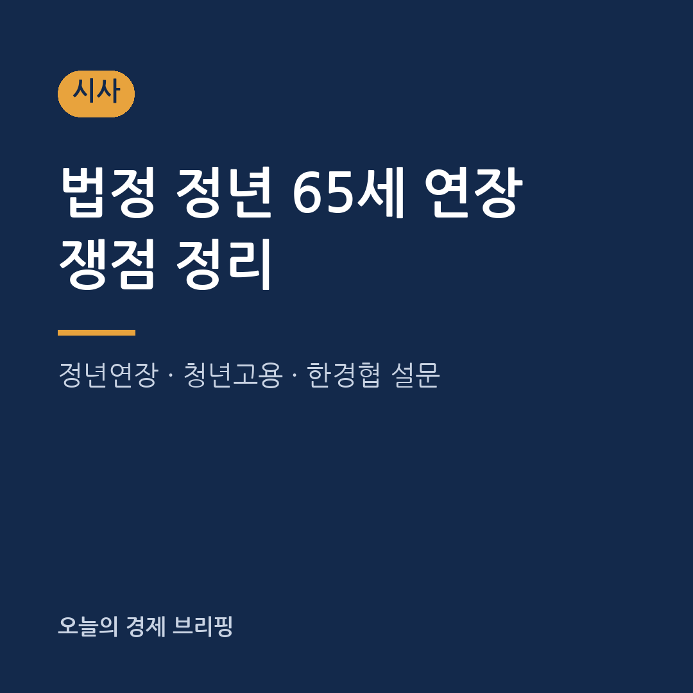
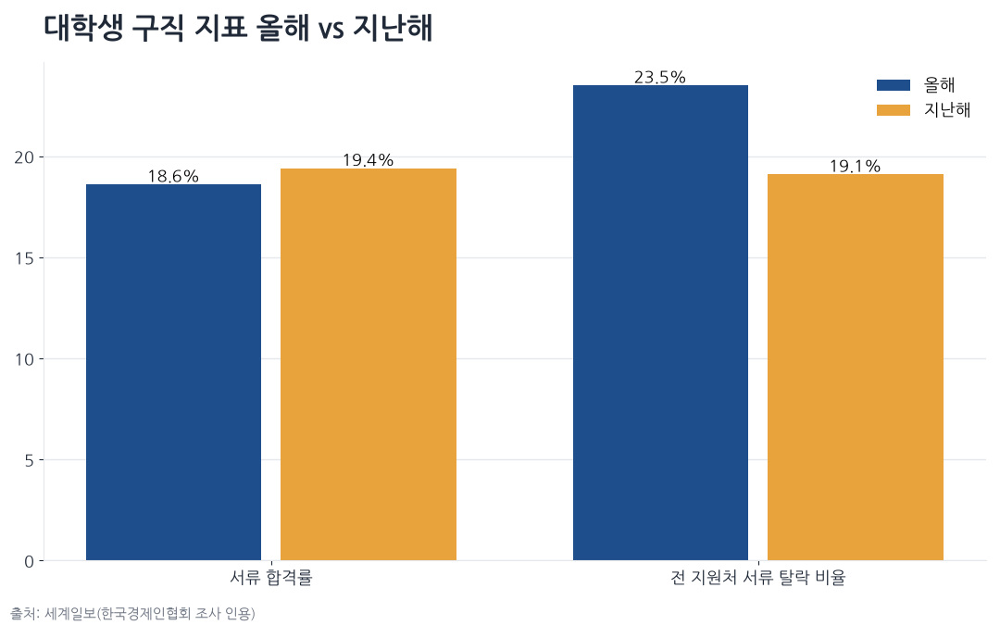

2026-11-24-1136-tistory 발행 키트 · 이 페이지는 검색에 노출되지 않습니다.
제목
카테고리
시사태그
본문 (그림·표 포함)
휴대폰 블로그 앱에서는 그림이 같이 붙지 않을 수 있어요. 그때는 [글자만 복사] 후 아래 이미지를 저장해 [그래프1]·[표1] 자리에 첨부하세요.

핵심 요약: 법정 정년을 65세로 올리는 법안을 올해 안에 처리하겠다는 정부 방침이 나온 상황에서, 한국경제인협회(한경협) 설문 응답자의 61.9%는 정년연장이 청년 신규채용을 줄일 것이라고 답했습니다. 제도 변경은 고령 근로자의 소득 기간과 청년 채용에 동시에 영향을 주기 때문에 세대별 입장을 함께 확인할 필요가 있습니다.
▶ 배경: 법정 정년 60세와 연장 논의
법정 정년이란 사업장이 정년을 정할 때 법으로 최소한 지켜야 하는 나이를 말합니다. 현재 기준은 60세이며, 이를 65세로 높이는 방안이 정책 의제로 올라와 있습니다.
고용노동부 장관은 연내 입법 추진 의지를 나타냈습니다. 더불어민주당 정년연장특별위원회 소위원회는 11월 27일 개최가 예정되어 있습니다. 다만 구체적인 시행 방식은 아직 확정되지 않았습니다.
정년연장 논의 확인 항목
| 무엇이 | 내용 | 어디서 확인 |
|---|---|---|
| 현행 법정 정년 | 60세 | 관련 법령·언론 보도 |
| 추진 방향 | 65세로 연장, 연내 입법 추진 의지 | 고용노동부 발언 보도 |
| 다음 일정 | 11월 27일 당 정년연장특위 소위원회 예정 | 국회·정당 공지 |
| 설문 규모 | 대학생·졸업자 등 2,489명 | 한경협 조사 결과 |
출처: 세계일보
▶ 핵심 내용: 한경협 대학생 취업인식조사
한경협은 11월 22일 대학생 취업인식조사 결과를 공개했습니다. 응답자는 전국 4년제 대학 재학생과 졸업자·졸업 유예자·졸업 예정자 2,489명입니다.
정년이 60세에서 65세로 늘어나면 청년 신규채용이 감소할 것이라는 응답은 61.9%였고, 채용 기회가 늘어날 것이라는 응답은 14.4%였습니다. 감소 전망이 증가 전망의 4배를 넘는 수준입니다.
이 수치는 응답자의 체감 전망이며, 실제 채용 규모는 법안의 세부 내용과 기업의 대응에 따라 달라질 수 있습니다.
▶ 구직 환경을 보여 주는 지표
같은 조사에서 적극적인 구직자의 평균 지원 횟수는 10.2회였습니다. 서류 합격률은 18.6%로 전년 19.4%보다 0.8%포인트 낮아졌습니다.
모든 지원처에서 서류 탈락을 겪은 비율은 23.5%로 전년 19.1%보다 높아졌습니다. 취업 과정의 가장 큰 어려움으로는 일자리 부족을 택한 응답이 51.8%였습니다.
정년연장에 대한 우려는 이처럼 구직 현장에서 느끼는 어려움과 맞물려 나타난 것으로 해석됩니다.

▶ 영향: 근로자와 청년, 두 방향
근로자 측면에서는 정년이 늘면 같은 직장에서 소득을 얻는 기간이 길어집니다. 퇴직 후 연금을 받기 전까지의 소득 공백을 줄일 수 있다는 점이 기대 요인입니다.
청년 측면에서는 신규채용 여력이 줄어들 수 있다는 우려가 큽니다. 설문 결과가 보여 주듯 청년층은 연장 효과를 부정적으로 보는 비중이 높습니다.
따라서 정년연장 입법은 단순히 나이를 올리는 문제가 아니라 세대 간 일자리 배분과 맞닿은 사안으로 볼 수 있습니다.
▶ 확인할 점
첫째, 법안에 단계적 시행 일정이 포함되는지 확인해야 합니다.
둘째, 임금체계와 인사 제도 개편에 관한 내용이 함께 논의되는지 살펴볼 필요가 있습니다.
셋째, 은퇴 이후 일자리 지원도 병행해서 알아볼 만합니다. 충북 영동군은 내년 어르신 일자리와 사회활동 지원사업의 참여 신청을 12월 11일까지 받고 있습니다. 해당 지역 외 거주자는 거주지 지자체의 유사 사업 공고를 확인하시기 바랍니다.
▶ 정리
1. 법정 정년을 60세에서 65세로 늘리는 입법을 정부가 연내 추진할 뜻을 밝혔고, 11월 27일 당 소위원회가 예정되어 있습니다.
2. 한경협 설문에서 청년 신규채용 감소를 예상한 응답은 61.9%, 증가를 예상한 응답은 14.4%였습니다.
3. 법안의 단계적 시행 여부와 임금체계 논의를 확인하고, 은퇴 후 일자리 사업도 지자체별로 점검하세요.
출처 (본문 맨 아래에 붙여넣기 권장)
- 세계일보, 대학생 10명 중 6명 “정년연장, 청년 신규채용 줄 것”, https://www.segye.com/newsView/20261124504055 - 연합뉴스, [영동소식] 내년 노인 일자리·사회활동 참여자 모집, https://www.yna.co.kr/view/AKR20261124060200064